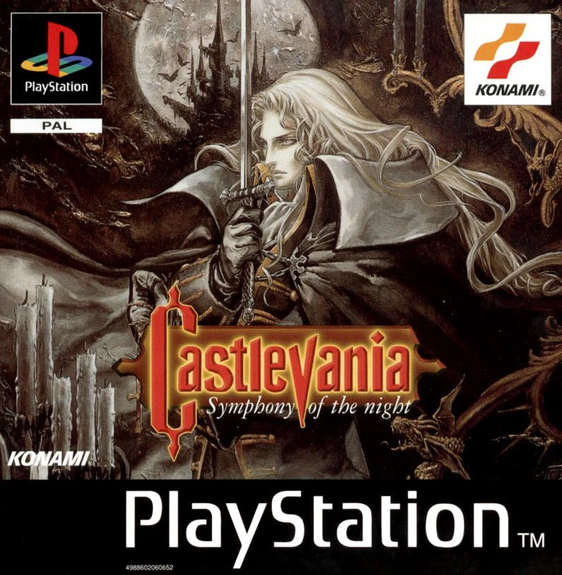

Castlevania: Symphony of the Night no es solo un videojuego; es una obra maestra gótica que redefinió la historia del entretenimiento digital y dio origen al género Metroidvania.Lanzado en 1997, este título rompió los moldes de las plataformas lineales para sumergir al jugador en una sinfonía de exploración, acción y rol envuelta en una atmósfera oscura e inolvidable.La Premisa Épica El legendario clan Belmont ha desaparecido y el castillo de Drácula, una criatura del caos que cambia de forma, emerge de entre la niebla antes de tiempo. Es aquí donde despierta Alucard, el hijo dhampir del Conde. Dividido entre su sangre maldita y su humanidad, Alucard decide adentrarse en las entrañas de la fortaleza de su padre para sellarla y salvar a la humanidad, desatando una tragedia familiar de proporciones mitológicas.Razones de su Legado InmortalEl Elixir Visual: Su arte en dos dimensiones (2D) representa la cumbre del pixel art, con animaciones fluidas, escenarios góticos detallados y jefes colosales que superan la estética de su época.Una Banda Sonora Legendaria: Compuesta por Michiru Yamane, la música es una fusión perfecta de rock progresivo, música clásica, techno y jazz que se clava en la mente del jugador para siempre.Libertad y Descubrimiento: El mapa del castillo es un laberinto interconectado repleto de secretos, armas místicas y pasajes ocultos que premian la curiosidad del jugador.El Gran Giro Final: El juego desafía las expectativas con uno de los secretos más icónicos de la historia: la revelación de un segundo castillo invertido, duplicando la aventura y el desafío cuando creías haber terminado.Alucard no solo camina por las sombras; danza en ellas con una gracia letal, convirtiendo cada estocada de espada y cada hechizo en un poema visual de redención y sangre.

Weapon & shields
Inverted Castle
Relics of Power
Boss Batles
"What is a man? A miserable pile of secrets!".